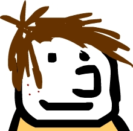
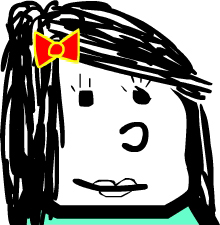

|

Untreated Patient
Click on the image above to begin. Follow the directions given by the volunteers to experiment with the "Untreated Patient" Lab.
We will MEASURE the loss of vision in a patient. In this section of the KTU Hands-On activity, you will learn MEASURE the loss of vision in a patient ny looking at his retina. Be sure to ask the KTU volunteers any questions that you may have! |

Treated Patient
Click on the image above to begin. Follow the directions given by the volunteers to experiment with the "Treated Patient" Lab.
We will Experiment with how to treat a patient. In this section of the KTU Hands-On activity, you will give our patient a treatment and determine whether it can slow down the disease. Be sure to ask the KTU volunteers any questions that you may have! |